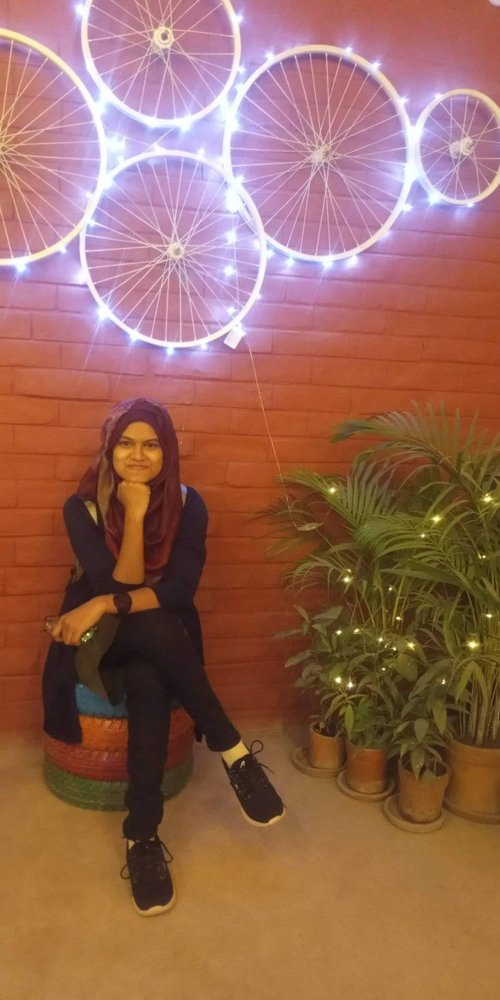

Analyze some Business question about 12 month sales data using Pandas and Python Matplotlib in Jupiter notebook environment.
ABOUT ME
A good first impression can work wonders ― J. K. Rowling

PORTFOLIO
Don't tell me what you're going to do, show me what you've done ― Smith
In this analysis, I have tried to find some specific question related to business sales, profit, yearly change etc using Python and Jupiter Notebook.

Analyze sales data to find insights about order, revenue, sales, and create multi pages dashboard in Power BI.

Analyze sales data to find some insights about profit, sales, market, revenue, loss, top product, yearly sales and profit and visualize it in Power BI.

This project explores COVID-19 world vaccination and death dataset. I have used some advanced SQL clause.
WHAT I DO
I expose insights and trends that are hiding behind raw data, and generate insights, to make strategic choices and decisions to ensure success and achieve goals using SQL, Excel, PowerBI, Tableau, Python, R and Statistics for Analysis.
Data Collection
I collect data for and measuring them based on an organization's goal.
Data Cleaning
I clean data and handle errors with highest priority using Excel, Power BI, and SQL.
Analyze Data
I am specialized in analyzing data. Results, trends and recommendations are clearly presented in reports or tools.
Dashboard
I create interactive Dashboards, Reports which can be used and shared internally or publicly, Also I work on-spot ad-hoc reporting.
Storytelling
I often tell story from the findings of data. To unwrap the insights, I need to ask the right questions and data give me a story to tell.
WONDERING HOW DATA CAN LEAD YOU TO GET INSIGHTFULL SOLUTION?
OR
HAVE ANY PROJECT IN MIND?